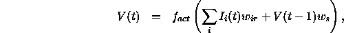
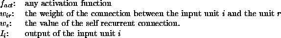
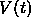
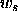
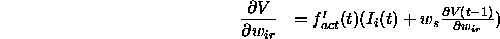
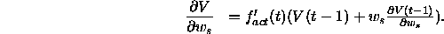

The output of a recurrent unit r is given by:

where:

The derivatives of

with respect to and
are computed as follows:

and

At t=0, it is assumed that the unit's previous value and previous derivatives are all zero.